The best way to understand what a respray can do is to see it. Every kitchen below is a real job by our team, in a real Hampshire home — nothing replaced, just prepared and resprayed. Tap any photo to see it bigger.
Gloss kitchens
Hursley
 Before
Before After
AfterA grey gloss kitchen turned sage green. Gloss needs careful preparation before it will take new paint, but once it’s done properly the change is complete — the kitchen reads as a new painted kitchen. More kitchens near Winchester.
Alresford
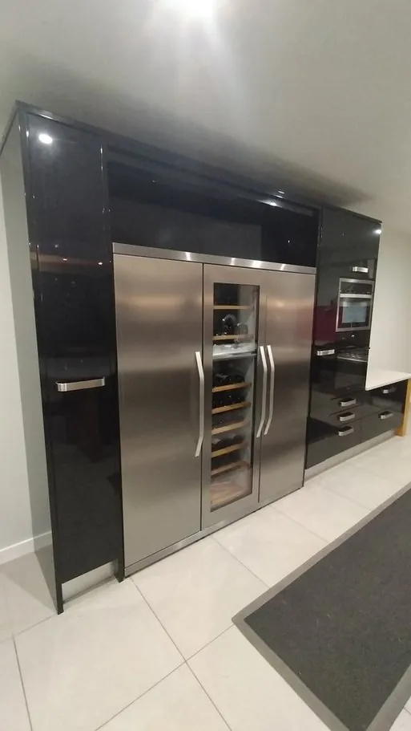
Before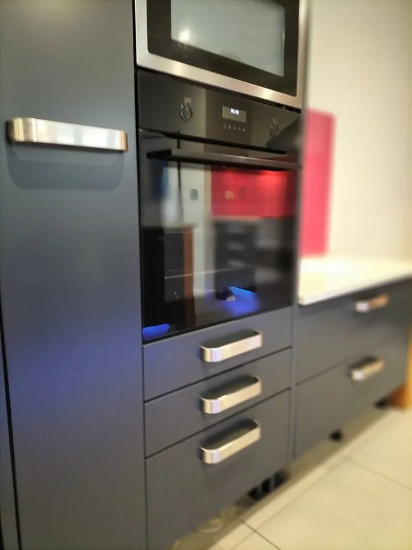
AfterFrom black gloss to a softer slate grey — proof that you’re not stuck with a high-gloss finish you’ve fallen out of love with.
Oak, pine and cherry kitchens
Eastleigh
 Before
Before After
AfterA classic oak shaker kitchen brought up to date in mid grey, keeping the doors and the layout the owners already liked. More kitchens around Southampton.
Fareham
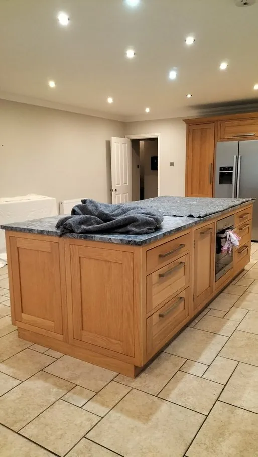
Before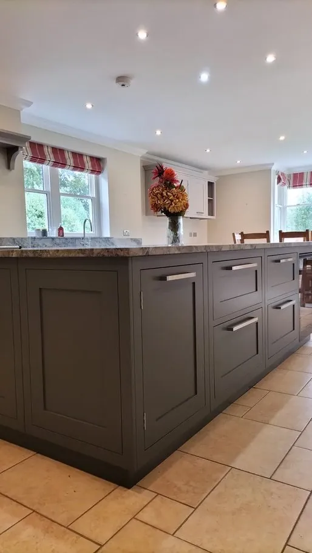
AfterAn oak island resprayed charcoal grey — a darker island is one of the most popular ways to add drama without darkening the whole room. Kitchen resprays in Fareham.
Botley
 Before
Before After
AfterA pine kitchen, photographed mid colour-choice with the samples still on the doors, and the finished teal green.
Stockbridge
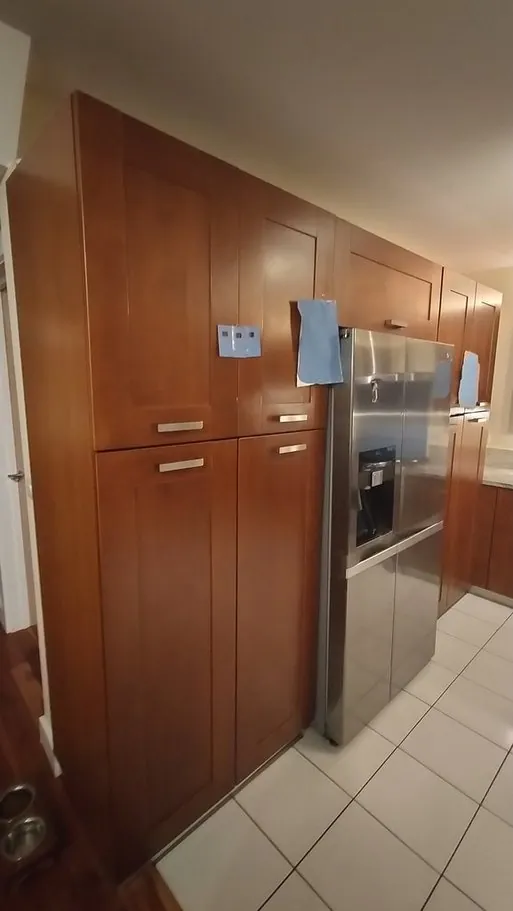
Before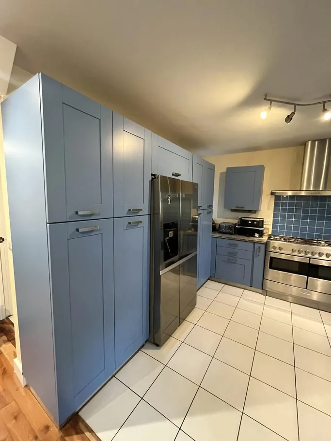
AfterCherry wood tall units transformed in cornflower blue — a brave colour that completely changes the character of the room. More kitchens near Winchester.
Ringwood
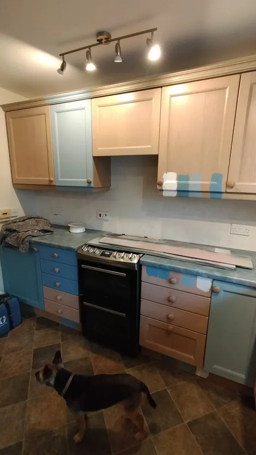
Before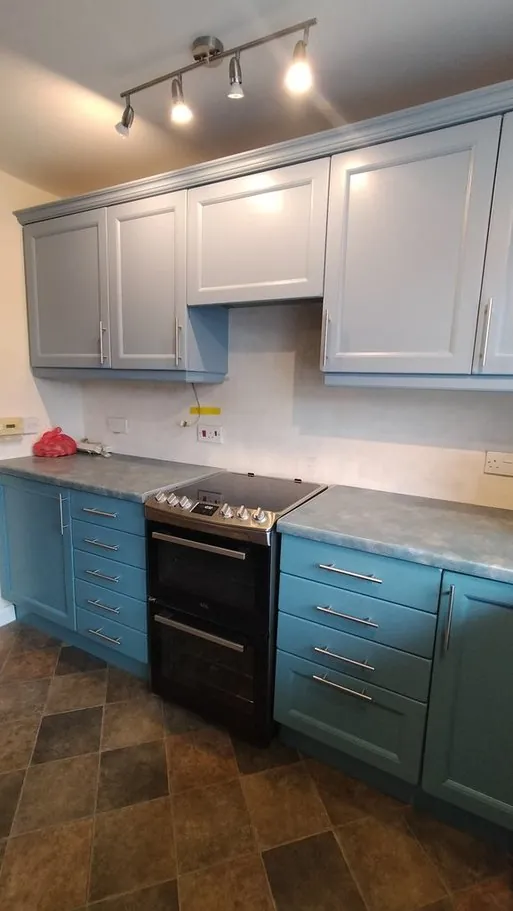
AfterA light oak kitchen resprayed in two colours — blue-grey and teal.
Painted kitchens given a new colour
Bishops Waltham
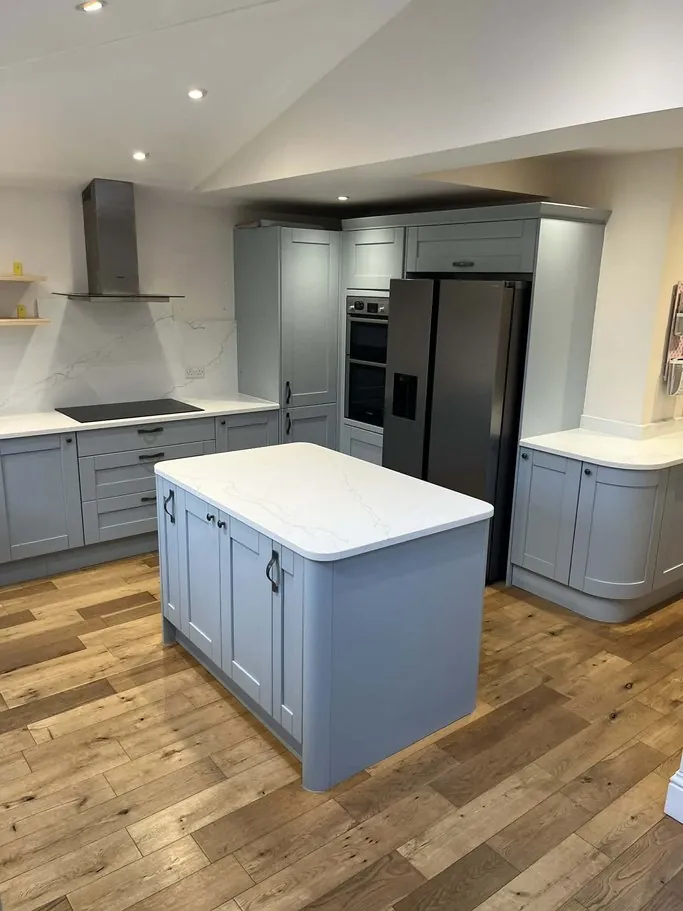
Before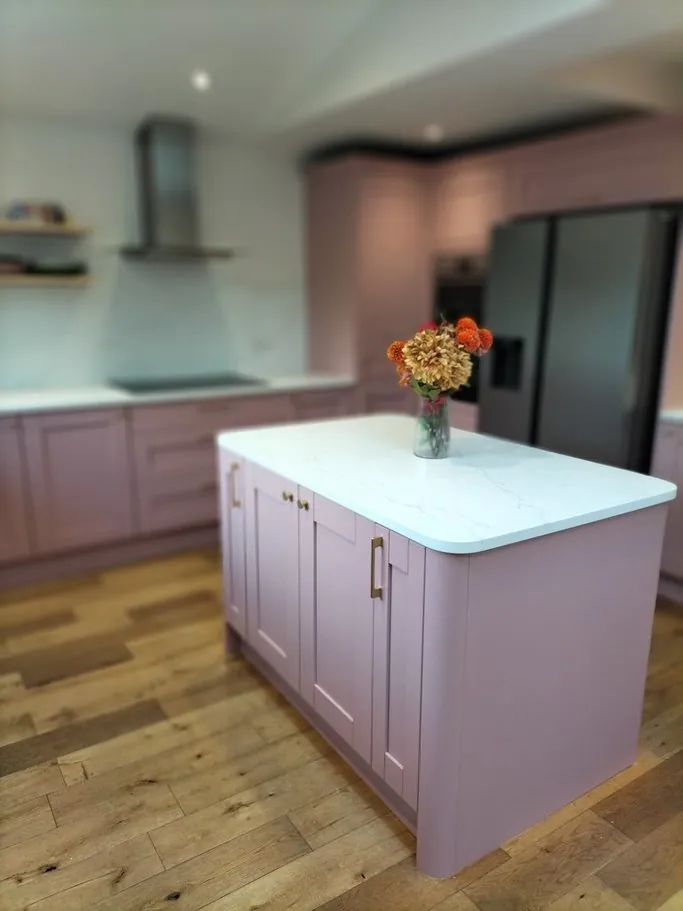
AfterA pale blue shaker kitchen resprayed dusky pink, with new brass handles fitted while the doors were off.
Waterlooville
 Before
Before After
AfterA grey kitchen in a beamed cottage room, warmed up with dusky pink and brass.
Denmead
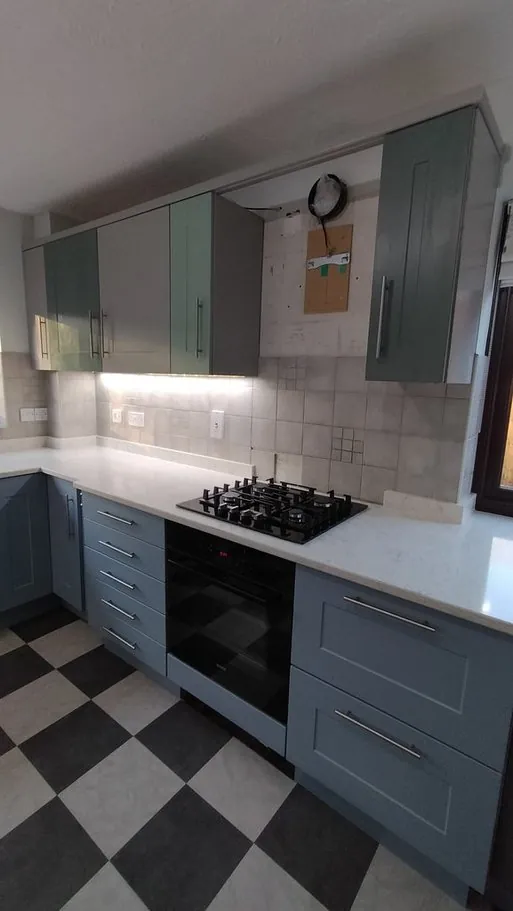
Before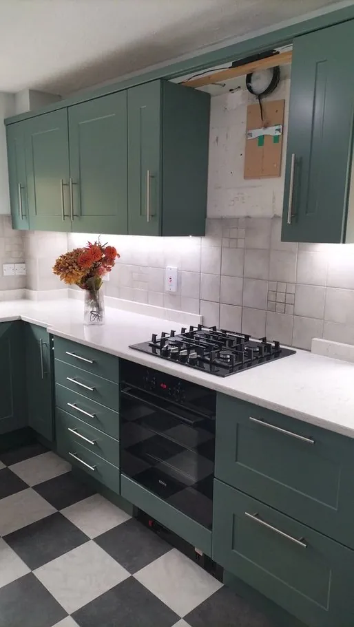
AfterA blue-grey shaker kitchen taken to a rich deep green. Kitchen resprays around Petersfield.
Twyford
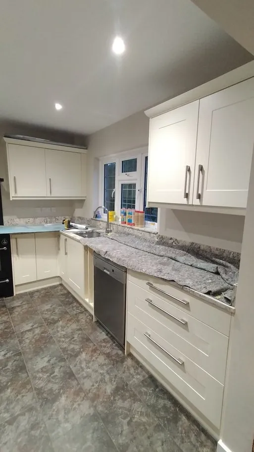
Before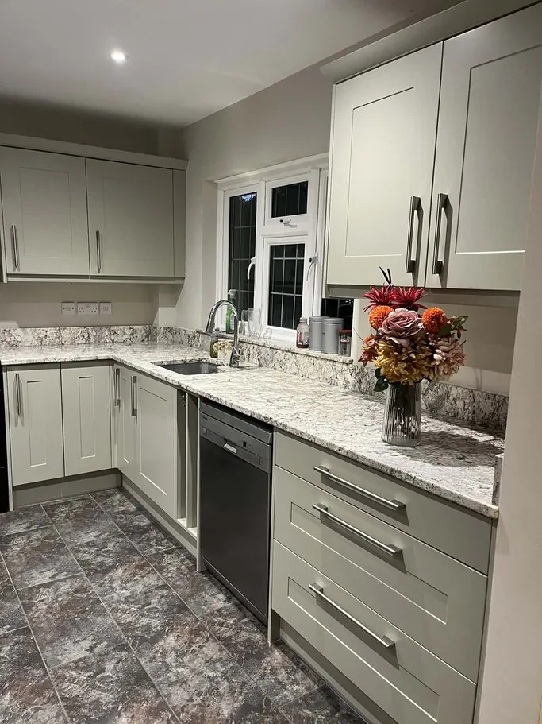
AfterA cream shaker kitchen refreshed in a soft sage grey — a gentle change that makes the whole room feel newer.
Fair Oak
 Before
Before After
AfterWorn teal shaker units given a fresh pale blue-grey finish.
What these kitchens have in common
None of them were replaced. In each case the doors and drawer fronts were collected and sprayed at our dust-free workshop, the fixed parts were finished in place, and the owners had just 2 afternoons of disruption across about 5 days.
See more in our full gallery, or read the colours Hampshire homeowners are choosing.
We work predominantly in Hampshire
We’re a local, family-run team based near Botley, so most of our kitchens are in Hampshire and just over its borders — Winchester, Southampton, Eastleigh, Chandler’s Ford, Hedge End, Romsey, Andover, Basingstoke, Alton, Petersfield, Fareham, Waterlooville and the villages in between.
Further afield? Get in touch anyway — we’ll happily travel for the right kitchen.